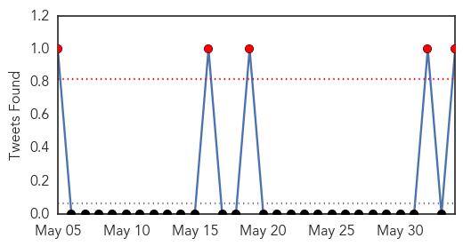

30 Day Trends
Web: 11 alerts, 5 warnings
Twitter: 5 alerts, 0 warnings
Top Articles:
- 1.000
- Cholera In Sudan, Ebola Threat In Sierra Leone, MERS Invades Algeria
- 0.989
- Combating cholera - Democratic Republic of the Congo
- 0.987
- DR Congo: Combating Cholera
- 0.984
- 27 cholera deaths in two weeks in S. Sudan
- 0.972
- Cholera cases go up in Juba
- 0.932
- IOM South Sudan Situation Report 25, 31 May 2014 - South Sudan
- 0.765
- International Medical Corps and Luftfahrt ohne Grenzen Partner in Response to Devastating Balkans Floods - Bosnia and Herzegovina
- 0.744
- 20 in hospital after drinking Bloemhof water
Top Tweets:
- 0.623
- RT: Cholera emergency in SouthSudan: Of all the (more than 1100) cases only 18 have been inside the UNMISS…
Web/News Articles

Tweets
Article Locations